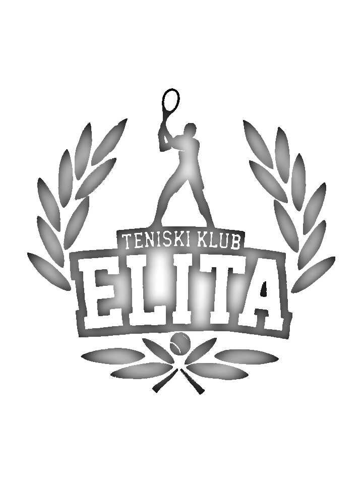
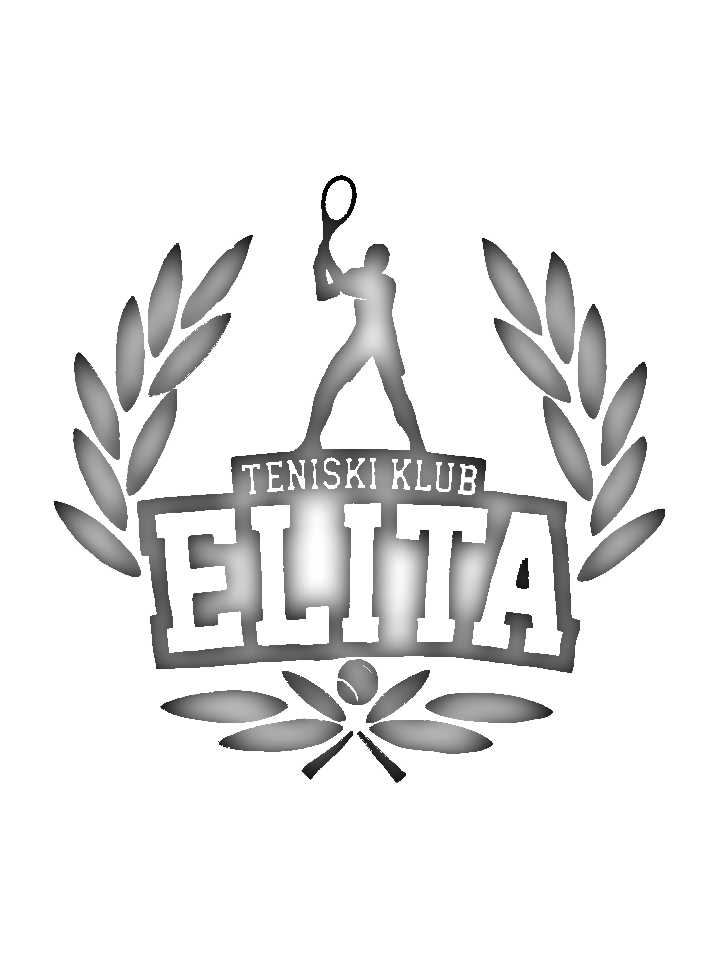

OŠ "Jovan Popović"
Osnovna škola “Jovan Popović” se nalazi u Inđiji. Škola je osnovana 1962. godine. Škola poseduje 15 specijalizovanih učionica, kabinete, biblioteku sa preko 8500 knjiga i čitaonicu, medijateku, salu za fizičko, sportske terene, letnju učionicu i pozornicu. Školu pohađa preko 500 učenika. Nastava se izvodi u 2 smene. Nastava se izvodi na srpskom jeziku.
Adresa: Kralja Petra Prvog 124, Inđija
Telefon: 022/561-330
OŠ "Petar Kočić"
Osnovna škola “Petar Kočić” se nalazi u Inđiji. Postoje podaci da je škola osnovana 1782. godine. Školu pohađa oko 1000 učenika, raspoređenih u 40 odeljenja. Pored matične škole u Inđiji, nastava se izvodi i u izdvojenom odeljenju, na Ljukovu. U školi se pored redovne nastave organizuju i vannastavne aktivnosti. U sklopu vannastavnih aktivnosti organizovan je rad sekcija: dramska i recitatorska, streljačka, košarkaška i druge.
Adresa: Cara Dušana 9, Inđija
Telefon: 022/561-540
Sport Caffe
Sport Caffe je kafić u Inđiji, u čijem sklopu se nalazi hala sa terenom za košarku, rukomet i tenis.
Adresa: Novosadska bb, Inđija
Telefon: 063/727-0327
 
